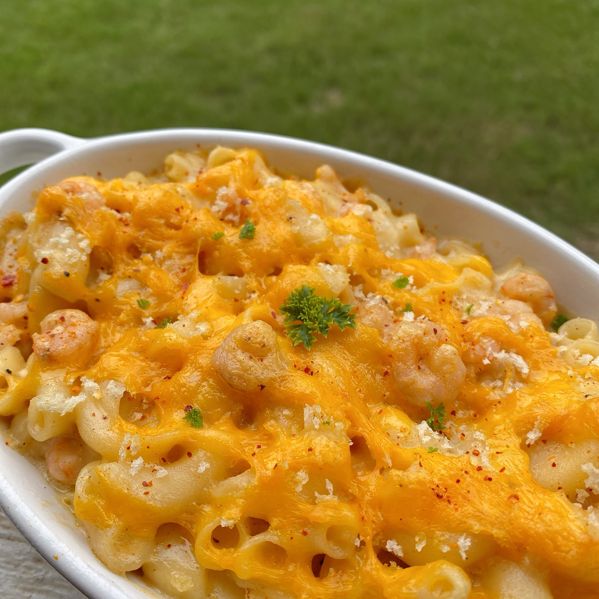

Shrimp Mac and Cheese

Description
This macaroni and cheese takes on a subtle coastal flair with the addition of shrimp. Cooked salad shrimp was used as the size is
comparable to the elbow macaroni.
Ingredients
- 1/2 cup elbow macaroni
- 1 tablespoon unsalted butter
- 1 tablespoon all-purpose flour
- 3/4 cup 1% milk
- 1/2 cup shredded sharp Cheddar cheese
- 1 1/2 tablespoons sour cream
- 1/2 teaspoon Cajun seasoning
- 1 cup frozen salad shrimp
- 2 tablespoons panko bread crumbs (Optional)
- 2 tablespoons shredded sharp Cheddar cheese
Steps
- Preheat the oven to 350 degrees F (175 degrees C).
- Pour 5 cups water into a saucepan. Cover and bring to a boil over high heat. Add macaroni and boil until tender yet firm
to the bite, about 8 minutes.
- Meanwhile, melt butter in a saucepan over medium heat. Stir in flour until a smooth paste is formed. Slowly pour in milk,
stirring to incorporate. Add 1/2 cup Cheddar cheese, sour cream, and Cajun seasoning. Drain macaroni and stir into the sauce.
Add frozen shrimp and stir to combine.
- Pour macaroni mixture into an oval au gratin dish. Top with panko bread crumbs and 2 tablespoons Cheddar cheese.
- Bake in the preheated oven until bubbly and golden, about 20 minutes.
Return to main page